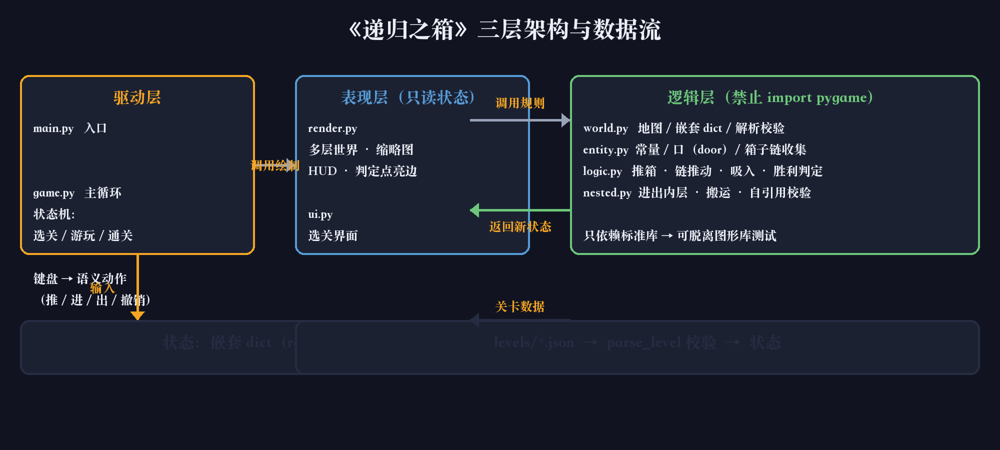
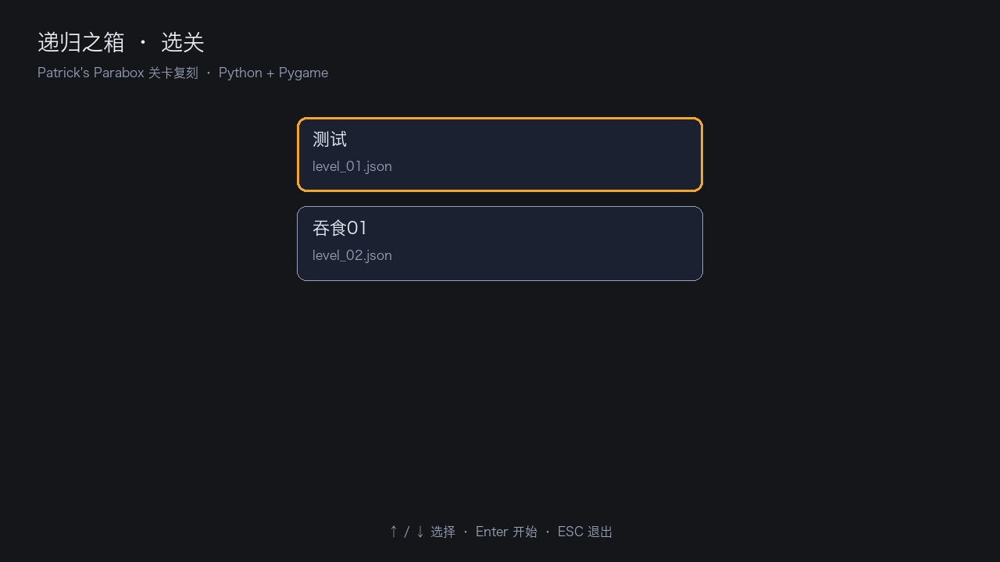
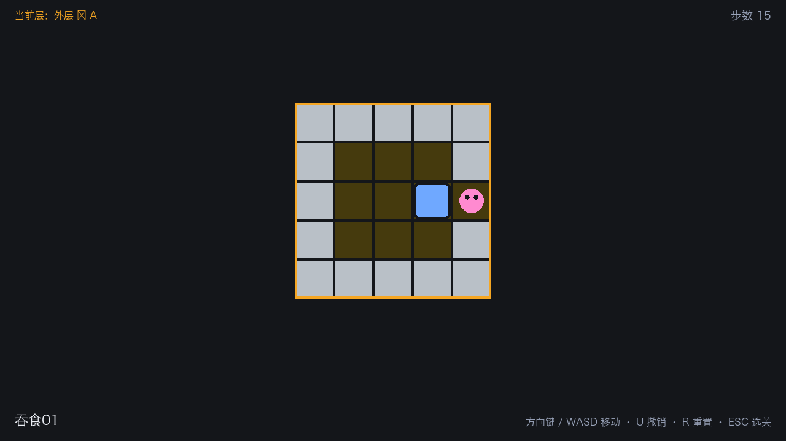
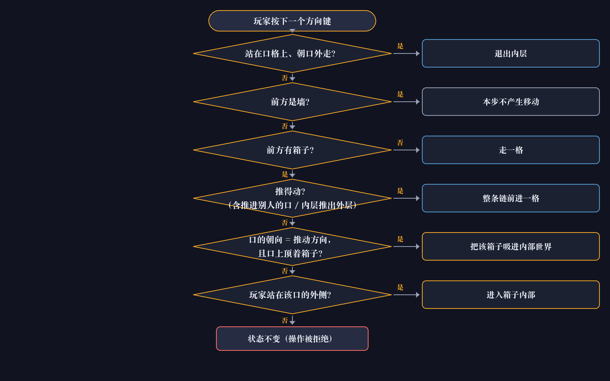
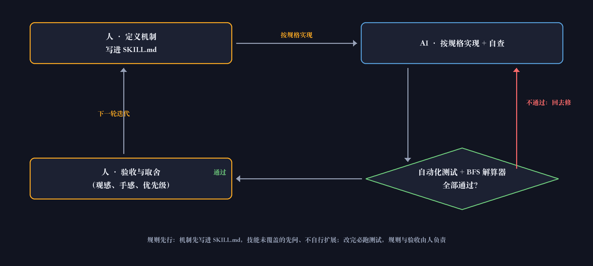

1 人智能编程组 · 完成人：董长坤 · 2026 年 9 月
项目：用 Python + Pygame 复刻《Patrick's Parabox》核心玩法的单关卡游戏——在推箱子之上，把方块变成可以走进去的封闭世界。
代码仓库：https://github.com/xxdw1017/parabox · 演示视频见 提交材料/演示视频/ 与本仓库 Releases
.dsh/skills/*/SKILL.md 定稿，再写代码；技能未覆盖的情况先提问，不自行发挥。levels/*.json，不改代码。| 角色 | 承担的工作 |
|---|---|
| 本人（董长坤） | 需求与机制设计、规则定稿（AGENTS / RULE / 4 份 SKILL）、优先级与取舍、代码审查、观感与手感验收、文档与演示 |
| AI（DSH 智能编程） | 按规格实现代码、补齐单元测试、文档校对、BFS 解算器原型、关卡数据转换与排版脚本 |
| 精力分配 | 机制与文档约 40%，编码约 35%，测试与验证约 25% |
协作方式：我定规则与验收标准，AI 在规则内实现并自查；每一次改动都必须跑通全部单元测试，小步提交、全程可回溯。凡是无法自动验证的产出（配色观感、手感），一律保留人工验收环节。

main.py / game.py：入口、主循环、场景状态机（选关 / 游玩 / 通关），把按键翻译成"推 / 进 / 出 / 撤销"这类语义动作；render.py / ui.py：多层世界绘制、内层缩略图、HUD、选关界面——只读状态，禁止修改；world.py / entity.py / logic.py / nested.py：地图与嵌套数据结构、口（door）判定、推箱与箱链、进出与搬运、胜利判定——只依赖标准库。logic.move() 纯函数 → 新状态 → 渲染层只读绘制。状态是嵌套 dict（root / player / return_stack / moves），层数由关卡数据决定，代码不写死深度。| 依赖 | 版本 | 用途 | 下载地址 |
|---|---|---|---|
| Python | 3.13.12（目标版本 3.12） | 运行环境 | https://www.python.org/downloads/ |
| pygame | 2.6.1（底层 SDL 2.28.4） | 窗口、事件、绘制、字体 | https://pypi.org/project/pygame/2.6.1/ · https://www.pygame.org/news |
| unittest | 标准库 | 单元测试（108 个用例） | https://docs.python.org/3/library/unittest.html |
| Git | 2.x | 版本管理 | https://git-scm.com/ |
为什么选 pygame：SDL 的成熟封装，绘制 / 事件 / 字体一站齐备；本项目美术是纯色平涂（只用 pygame.draw 的矩形与圆），不需要贴图管线与物理引擎，因此不引入任何重型引擎或第三方美术资源。依赖只有 pygame 一个，离线可运行。


当前层：外层 › A。| 维度 | 结果 |
|---|---|
| 必做功能 | ✅ 4 / 4：推箱子移动与箱链、嵌套世界进出、胜利判定、选关界面 |
| 选做功能 | ✅ 1 / 3：撤销 / 重置已完成（纯函数 + 快照，白送）；通关计时、音效未做 |
| 超出预期 | ⭐ 6 项：嵌套不限层数 + 自引用校验、双向穿口与吞食、双条件判定点（箱子 g + 玩家 G）、BFS 解算器、108 个自动化测试、文档一致性校验 |
| 质量 | 108 个用例全部通过；逻辑层可在无 pygame 环境下验证（85 通过 / 23 跳过） |
| 自评 | 机制完整度与工程质量达标，达到开题承诺并超出；差异化亮点是"规则先行 + 可验证"的 AI 协作流程 |

① 判定优先级（src/logic.py::move()）：一次按键按固定顺序判定六条分支——
出口 → 墙 → 空地 → 整链推动 → 吸入（吞食）→ 进入箱子；全部不满足则状态不变、不记步数、不进撤销栈。
② 为什么顺序不能换：站在口格朝外走必须先于碰撞判定，否则会被当成撞墙；"整链推不动"必须先于"进入箱子"。这个顺序在 SKILL.md 里写死，改动前先列出受影响的测试用例。
③ 关键代码（节选自 logic.py 与 nested.py）
# 计数只在这一处发生：一次按键 = 一步（曾因搬运路径重复计数，37 步记成 39 步）
def _accepted(state, new_state):
new_state["moves"] = state["moves"] + 1
return new_state
# 进入落点 = 对侧边的中心口格（口 = 内层边缘中心格）；返回栈记 (world_ref, box_uid)，退出时现查位置
def enter_world(state, box, direction):
cell = side_center(box["inner_world"], opposite(direction))
state["player"]["path"] += [box["uid"]]
state["player"]["x"], state["player"]["y"] = cell
state["return_stack"].append((state["player"]["path"][:-1], box["uid"]))
④ 口模型与双向穿口：内层宽高必须是奇数，四条边的中心格即口位，边缘环上除中心格外必须都是墙（解析期报错）。箱子与玩家共用同一个口与落点：推箱时链尾的箱子会被推进别人的口（吞食），在内层再推一步就把它推回外层。
效果
R 重置）；美术无补间动画。结论：核心机制（嵌套进出、吞食、双向穿口、跨层冻结、双条件判定）全部按 SKILL 规格实现并通过测试；剩余差距集中在表现层（音效、计时、动画、死局提示），属于开题时就划为"选做"的范围。后续方向：解算器工具化、动画补间、更多关卡。

RULE.md 还明确要求"技能未覆盖的情况先提问、不自行扩展机制"，避免了机制被悄悄改掉。git commit --amend 补正。此后改为分步执行、逐条检查退出码，这条习惯也写进了交付检查。一句话总结：AI 让实现速度提升明显，但它需要三样东西才能可靠工作——清楚的规格、可自动判定的验收标准、以及一个人来拍板。这三样正是本次项目投入最多的地方，也是我认为最值得保留的经验。
附：规则与测试的历史版本（AGENTS.md 8 版 / RULE.md 3 版 / SKILL 共 10 版 / 测试 10 版）见 提交材料/历史版本/，含逐版导出文件与《版本演化总览》。